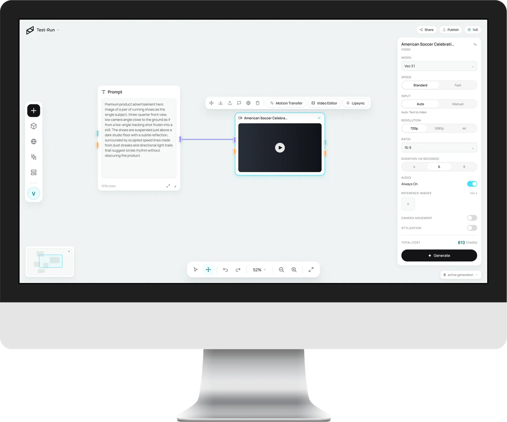
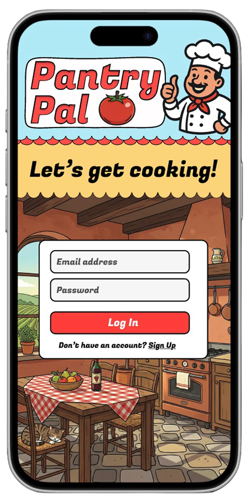
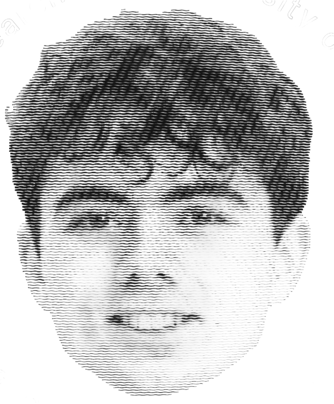

Tigo Ponce de León Tigo Ponce de León
product design engineer product design engineer
Work
Work
selected projects


Vicino AI
UX Engineer Intern · Summer 2026
An infinite canvas where AI tools become nodes — helped build it from the ground up, plus the design system the whole product wears.
Pantry Pal
Product Designer · Winter 2026
Six screens between a full pantry and dinner: scan what you have, get told what you can cook.
Next Level
Founding Visual Designer · Summer 2025
A drone-cleaning company given a face — mark, palette and the whole kit it rolled out on.
click the image to open · ← → to browse
Play
Play
three arcade classics, rebuilt by hand
Computer
0
Player
0
Pong
Atari · 1972
longest rally…
Score
0
Best
0
Snake
Nokia · 1997
longest snake…
Score
0
Best
0
Flappy Bird
dotGears · 2013
longest run…
Play
best on a bigger screen
Pong, Snake, and Flappy want a keyboard and a wider court. Swing by on a laptop to play — for now, here’s the rest of the site.
← back homeAbout Tigo Ponce de León
Hello
nice to meet you
experience
download the pdf ↓-
UX Engineer Intern
Vicino, Inc.
Bellevue, Washington · Jun 2026 – Present
Agentic generation and analytics for an AI marketing platform; a Figma-to-React component library.
-
Product Designer & Developer
PantryPal
Chicago, Illinois · Nov 2025 – Feb 2026
End-to-end AI recipe app; task completion up 40% across testing rounds.
-
UX Researcher
University of Chicago
Chicago, Illinois · Nov – Dec 2025
Studied interface homogenization across six AI-generated web apps.
-
Founding Visual Designer
Next Level Drone Cleaning
Kortrijk, Belgium · Aug – Sep 2025
Complete brand identity and marketing site for a drone-tech startup.
bio

Tigo Ponce de León is a product design engineer from Portland, Oregon. He now resides in the Midwest, studying Media Arts & Design and Computer Science at the University of Chicago, where he’ll graduate in Spring 2027.
He believes that software should be both useful and pleasurable and that all design decisions should act in service of that fundamental aspiration. He also considers artificial intelligence as the defining technology of this age and is eager to contribute to its evolution over the coming years.
When not busy designing prototypes in Figma or translating ideas to code, you can find him going on bike rides along Lake Michigan, watching Real Madrid matches, or hanging out with friends.
Contact
always happy to talk